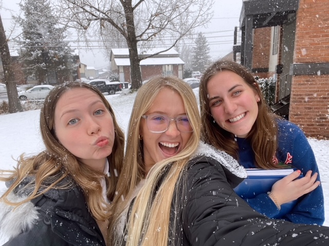
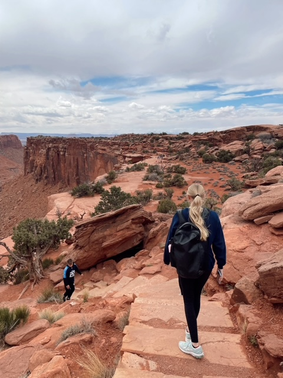

My name is Sydney Suggs and I am from Bentonville, Arkansas! I wasn't always going to come to BYU until I got baptized into the Church of Jesus Christ of Latter-Day Saints in June of 2020. Since then, my whole plan changed and I am now here in Utah! Which is amazing.
I love all things outdoors! Pickleball, spikeball, volleyball, tennis, hiking, running, all sorts of things! With that being said, I also love warm weather and the beach. The beach is definitely my happy place. I also find so much happiness in my friends. I am so grateful to be surrounded by such wonderful people and that the Lord has placed those people in my life. I would not be where I am today without them. I am a big extrovert but also introvert which could sound controversial but is totally true!
Back home in Arkansas, I live with my parents, sister, and nephew. They are the best. I would not trade them for the world. They absolutely love Utah and have been the biggest support for me.My nephew is also one of my favorite people in the whole world and he is seen in the picture below. He is definitely a crazy boy but also the most fun EVER! I love being an aunt. See Arkansas' page!

Contact Me!
-
Phone Number: 479-715-3299
-
Email: Sydsuggs1@icloud.com